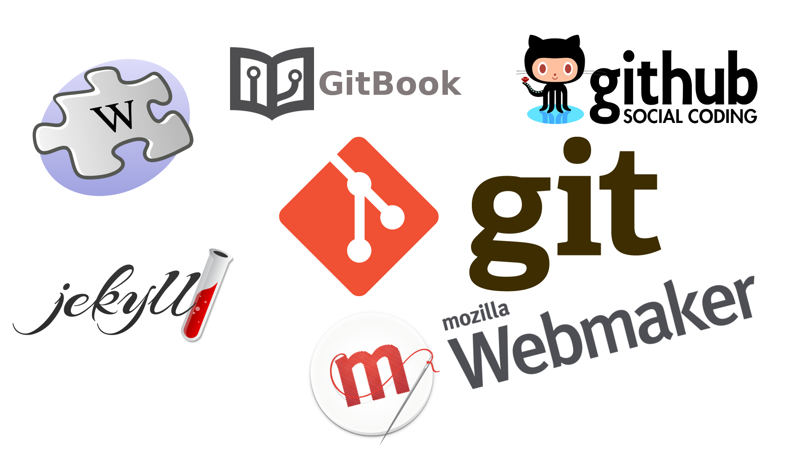
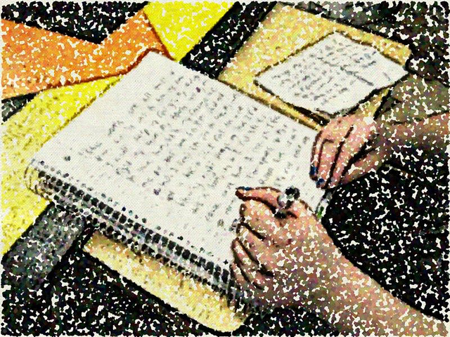
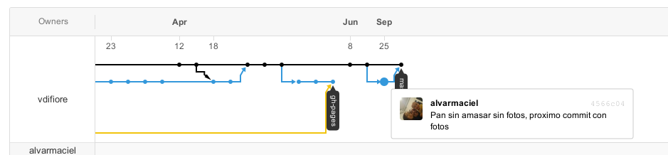
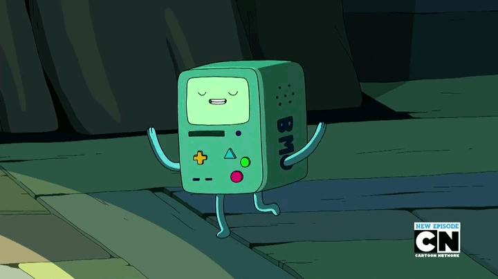
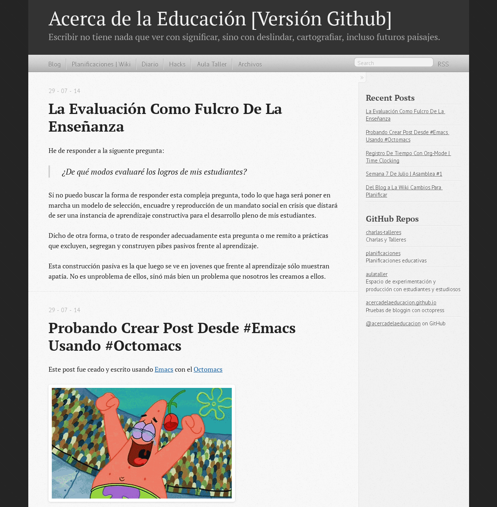
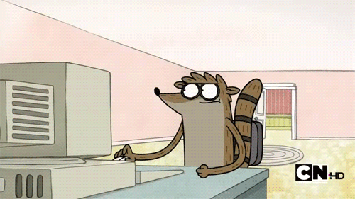

Herramientas distribuidas para la planificación y la gestión de recursos digitales en el aula

{Alvar}, {Maciel}, {Smalltalks / Squeakfest 2014}, {UTN | Córdoba, Argentina}, {3 de Noviembre}

- Establecen un plan de acción.
- Tentativo y Modificable.
- Documenta un recorrido.
- ¿Personal o público?
{Imagen:mrsdkrebs}
Colaboración y control de versiones

Publicaciones Rápidas con Jekyll


Flujo de trabajo usando Github

- Escribo o "fotocopio" una planificación
- Si fotocopié, modifico lo que creo necesario
- Si es un trabajo en conjunto, envío mis modificaciones
- actualizo el repositorio y se actualiza mi página
- Llevo la clase adelante
- Vuelvo a modificar o escribir.
Unas palabras sobre las dificultades
Comunidades de aprendizaje
- {Alvar}
- {Herramientas Distribuidas}
- {@amaciel}
- Diapos: {http://acercadelaeducacion.com.ar}
- GitHub Para Todos: Arena de juego para aprender GitHub y Markdown